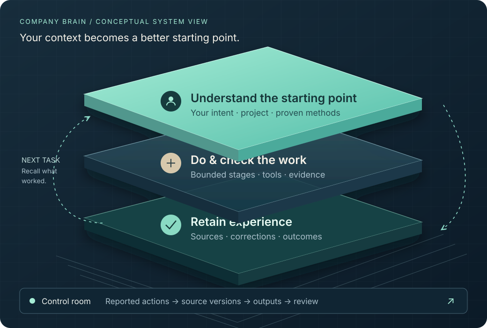

Find the intent.
Interpret the request in its project context, including approximate language and the user’s current corrections.
Work and review ↗Company Brain brings your context, successful workflows and corrections into the next piece of work. SYN is building the systems that let that continuity grow into cooperation.
MVP10 Presentation · Local personal harness · Pre-alpha

The local MVP connects native AI work with bounded project memory, selected procedures and checked outcomes. The person’s request remains the starting point; useful experience gives the next task a stronger foundation.
Interpret the request in its project context, including approximate language and the user’s current corrections.
Work and review ↗Retrieve relevant knowledge, source versions and prior methods. Select the tools and workflow appropriate to this task.
Memory and context ↗Carry participating work through bounded stages, inspect the returned artifacts and connect outcomes to their evidence.
The task harness ↗Retain useful results, corrections and failures through the archive workflow, with their provenance and scope.
Shared work contract ↗“Prepare the next project proposal.” The intended experience is to recall the relevant project, recover the method and corrections from a comparable accepted proposal, update its sources, and check the new result against the current brief.
The latest interface connects a central work map with task branches, a timeline, source inspection and searchable recordings. Select an action to inspect the sources and outputs it reports.
Reported parent relationship and selected work.
Recorded source pointer, version and available preview.
Reported metadata and the originating action.
Checked outcomes carried into the next piece of work.
13 October refinements also cover context checks, request parsing, Results refresh and clearer Creative review.
SYN develops around changing capabilities, standards and customer behaviour. The business plan connects each expansion to the conditions that make it useful, governable and economically viable.
A harness that connects one person’s intent, project context, methods and retained outcomes.
Role-specific agents and permissioned organisational knowledge support human–AI teamwork.
An Azure-based service connecting people, expertise and business through shared infrastructure.
The business grows through integration and support. Its longer horizon is a network where trusted agents help people find, agree and carry out useful work together.
Start with the business plan, follow the linked 3D dependencies, then inspect the source and development evidence. The same collection gives your AI a structured starting point.